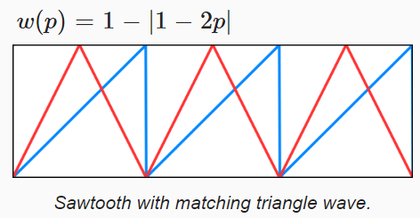

UnityCatLikeCoding-Flow
Table of Contents
UnityCatLikeCoding-Flow note.
<!– more –>
Flow
Texture Distortion
Animating UV
当液体不动时，其看起来和固体没差别。你在看的是水、果冻还是玻璃？ 游泳池是否结冰？ 为了确定这些问题，你可以扰乱你观察的物质，看其是否会变形，如果变形，其是如何变形的。只是创建一个材质，使其看起来像流动的水是不够的，其必须真的流动起来。否则，其看起来会像是像水的玻璃雕塑，或是时间暂停下的水。
大多数时候我们只是希望表面看起来像液体，其是由水或泥浆或者熔浆组成的。这样的液体表面不需要有交互，只需要在漫不经心地观察时看起来真实就可以了。因此，我们不需要进行复杂的物理模拟。我只需要在常规的材质上添加移动性就够了，可以通过对 uv 坐标添加动画来实现这种移动性。
直接沿着特定方向移动 UV
shader 实现如下：
float2 FlowUV(float2 uv, float2 flowDir, float time) { return uv + flowDir * time * _FlowStrength; } half4 frag (v2f i) : SV_Target { float2 flowDir = half2(0, 1); float2 uv = FlowUV(i.uv, flowDir, _Time.y * _TimeSpeed); half4 albedo = SAMPLE_TEXTURE2D(_MainTex, sampler_MainTex, uv) * _Color; half3 normalTS = half3(0, 1, 0); InputData inputData; InitializeInputData(i, normalTS, inputData); half4 col = UniversalFragmentPBR(inputData, albedo, _Metallic, 0, _Smoothness, 0, 0, 1); return col; }
可以得到如下效果：
使用 FlowMap 表示液体流动方向
shader 实现如下：
float2 FlowUV(float2 uv, float2 flowDir, float time) { return uv + flowDir * time * _FlowStrength; } half4 frag (v2f i) : SV_Target { float2 flowDir = SAMPLE_TEXTURE2D(_FlowMap, sampler_FlowMap, i.uv).rg * 2 - 1; float2 uv = FlowUV(i.uv, flowDir, _CustomTime.y * _TimeSpeed); half4 albedo = SAMPLE_TEXTURE2D(_MainTex, sampler_MainTex, uv) * _Color; half3 normalTS = half3(0, 1, 0); InputData inputData; InitializeInputData(i, normalTS, inputData); half4 col = UniversalFragmentPBR(inputData, albedo, _Metallic, 0, _Smoothness, 0, 0, 1); return col; }
可以得到如下效果:
上面视频展示了，使用 FlowMap 来控制 uv 移动方向得到的效果，一开始_CustomTime.y 会被重置为 0，之后逐步增加。由于每个位置上 flowDir 方向各不相同，随着时间的推移图像拉伸和挤压越严重。为了避免图像最终乱作一团，我们可以每隔一段时间就重置一次时间，最简单的方法是只取时间的小数部分来做动画。这样，整个画面就会重复播放，每次播放的持续时间为 1 秒。

float2 FlowUV(float2 uv, float2 flowDir, float time) { float progress = frac(time); return uv + flowDir * progress * _FlowStrength; } half4 frag (v2f i) : SV_Target { float2 flowDir = SAMPLE_TEXTURE2D(_FlowMap, sampler_FlowMap, i.uv).rg * 2 - 1; float2 uv = FlowUV(i.uv, flowDir, _CustomTime.y * _TimeSpeed); half4 albedo = SAMPLE_TEXTURE2D(_MainTex, sampler_MainTex, uv) * _Color; half3 normalTS = half3(0, 1, 0); InputData inputData; InitializeInputData(i, normalTS, inputData); half4 col = UniversalFragmentPBR(inputData, albedo, _Metallic, 0, _Smoothness, 0, 0, 1); return col; }
Seamless Looping
上面我们实现了非统一流向的流体的流动，但是每秒都会重置流动效果。为了让流动效果可以循环不中断，开始下一次流动之前，我们必须通过某种方式让 UV 恢复为原始值。当然不能将扭曲倒回去，这样看起来只会是来回流动，而不是有一致的流动方向。
Blend Weight & Seesaw
一个流动周期内，我们可以从 black 渐变为扭曲最大，然后再从扭曲最大渐变为 black。

float3 FlowUVW(float2 uv, float2 flowDir, float time) { float progress = frac(time); float3 uvw; uvw.xy = uv - flowDir * progress * _FlowStrength; uvw.z = 1 - abs(1 - 2 * progress); return uvw; } half4 frag(v2f i) : SV_Target { //float2 flowDir = half2(0, 1); float2 flowDir = SAMPLE_TEXTURE2D(_FlowMap, sampler_FlowMap, i.uv).rg * 2 - 1; float3 uvw = FlowUVW(i.uv, flowDir, _CustomTime.y * _TimeSpeed); half4 albedo = SAMPLE_TEXTURE2D(_MainTex, sampler_MainTex, uvw.xy) * uvw.z * _Color; half3 normalTS = half3(0, 1, 0); InputData inputData; InitializeInputData(i, normalTS, inputData); half4 col = UniversalFragmentPBR(inputData, albedo, _Metallic, 0, _Smoothness, 0, 0, 1); return col; }
Time Offset
虽然从技术上讲，我们消除了视觉上的不连续性，但我们引入了黑色脉冲效果。脉动非常明显，因为它同时发生在画面每个地方。如果我们可以将不同位置的黑色脉冲散布在不同时间点上，它可能就不那么明显了。 我们可以通过在表面上以不同的时间偏移来做到这一点。
half4 frag(v2f i) : SV_Target { float2 flowDir = SAMPLE_TEXTURE2D(_FlowMap, sampler_FlowMap, i.uv).rg * 2 - 1; // a通道存储 Perlin Noise，用于timeOffset float timeOffset = SAMPLE_TEXTURE2D(_FlowMap, sampler_FlowMap, i.uv).a; float3 uvw = FlowUVW(i.uv, flowDir, (_CustomTime.y+timeOffset) * _TimeSpeed); half4 albedo = SAMPLE_TEXTURE2D(_MainTex, sampler_MainTex, uvw.xy) * uvw.z * _Color; half3 normalTS = half3(0, 1, 0); InputData inputData; InitializeInputData(i, normalTS, inputData); half4 col = UniversalFragmentPBR(inputData, albedo, _Metallic, 0, _Smoothness, 0, 0, 1); return col; }
黑色脉冲仍然存在，但它已经变成了一种波浪，以一种自然的方式在表面蔓延。 时间偏移也使扭曲更多样化。
Combining Two Distortions
除了和 black 进行混合外，我们还可以和其他的内容进行混合。例如，我们可以和原始未扭曲的贴图进行混合，这样的我们会看到一个固定的贴图渐隐渐显，这会破坏流动的视觉效果。我们可以和另外的扭曲贴图混合，来避免该问题。我们可以使用两个脉冲模式，A和 B。当 A 的权重为 0 时，B的权重为 1；当 A 的权重为 1 时，B的权重为 0。其原理如下：
./UnityCatLikeCoding/flow01_blend_two_tex.ggb
float3 FlowUVW(float2 uv, float2 flowDir, float time, bool flowB) { float phaseOffset = flowB ? 0.5 : 0; float progress = frac(time + phaseOffset); float3 uvw; uvw.xy = uv - flowDir * progress * _FlowStrength; uvw.z = 1 - abs(1 - 2 * progress); return uvw; } half4 frag(v2f i) : SV_Target { //float2 flowDir = half2(0, 1); float2 flowDir = SAMPLE_TEXTURE2D(_FlowMap, sampler_FlowMap, i.uv).rg * 2 - 1; float timeOffset = SAMPLE_TEXTURE2D(_FlowMap, sampler_FlowMap, i.uv).a; float3 uvwA = FlowUVW(i.uv, flowDir, (_CustomTime.y+timeOffset) * _TimeSpeed, false); float3 uvwB = FlowUVW(i.uv, flowDir, (_CustomTime.y+timeOffset) * _TimeSpeed, true); half4 albedoA = SAMPLE_TEXTURE2D(_MainTex, sampler_MainTex, uvwA.xy) * uvwA.z; half4 albedoB = SAMPLE_TEXTURE2D(_MainTex, sampler_MainTex, uvwB.xy) * uvwB.z; half4 albedo = (albedoA + albedoB) * _Color; half3 normalTS = half3(0, 1, 0); InputData inputData; InitializeInputData(i, normalTS, inputData); half4 col = UniversalFragmentPBR(inputData, albedo, _Metallic, 0, _Smoothness, 0, 0, 1); return col; }
在两个模式之间进行混合，使得动画的持续时间减少了一半。它现在每秒循环两次(A 一次，B一次)。但是我们不必两次都使用相同的模式。我们可以将 B 的 UV 坐标偏移半个单位, 这使得模式不同(虽然使用的是同一张贴图)，但不会引入任何方向偏差。
float3 FlowUVW(float2 uv, float2 flowDir, float time, bool flowB) { float phaseOffset = flowB ? 0.5 : 0; float progress = frac(time + phaseOffset); float3 uvw; uvw.xy = uv - flowDir * progress * _FlowStrength + phaseOffset; uvw.z = 1 - abs(1 - 2 * progress); return uvw; }
Jumping UV
除了将 B 的 UV 偏移半个单位外，还可以按相位偏移 UV。 这会加长动画持续时间，循环回到完全相同的状态需要更长的时间。
我们可以简单地根据时间滑动 UV 坐标，但这会导致整个动画滑动，从而引入方向偏差。 我们可以通过在每个阶段保持 UV 偏移不变，并在阶段之间跳转到新的偏移来避免视觉滑动。 换句话说，每次权重为零时，我们都会进行 UV 跳跃。 通过向 UV 添加一些跳跃偏移量乘以时间的整数部分可以达到这种目的。
float3 FlowUVW(float2 uv, float2 flowDir, float2 jump, float time, bool flowB) { float phaseOffset = flowB ? 0.5 : 0; float progress = frac(time + phaseOffset); float3 uvw; uvw.xy = uv - flowDir * progress * _FlowStrength + phaseOffset; uvw.xy += (time - progress) * jump; uvw.z = 1 - abs(1 - 2 * progress); return uvw; } half4 frag(v2f i) : SV_Target { float2 flowDir = SAMPLE_TEXTURE2D(_FlowMap, sampler_FlowMap, i.uv).rg * 2 - 1; float timeOffset = SAMPLE_TEXTURE2D(_FlowMap, sampler_FlowMap, i.uv).a; float time = (_CustomTime.y + timeOffset) * _TimeSpeed; float2 jump = float2(_UJump, _VJump); float3 uvwA = FlowUVW(i.uv, flowDir, jump, time, false); float3 uvwB = FlowUVW(i.uv, flowDir, jump, time, true); half4 albedoA = SAMPLE_TEXTURE2D(_MainTex, sampler_MainTex, uvwA.xy) * uvwA.z; half4 albedoB = SAMPLE_TEXTURE2D(_MainTex, sampler_MainTex, uvwB.xy) * uvwB.z; half4 albedo = (albedoA + albedoB) * _Color; half3 normalTS = half3(0, 1, 0); InputData inputData; InitializeInputData(i, normalTS, inputData); half4 col = UniversalFragmentPBR(inputData, albedo, _Metallic, 0, _Smoothness, 0, 0, 1); return col; }
设置 jump 为不同的值时，最终 uv 的偏移量变化如下表所示：
Analyzing Jumps
上面视频中，将 FlowSpeed 设置为 0，Jump 也设置为 0。此时，可以看到每个正方形在两种颜色之间交替。还可以看到，B将相同的纹理偏移了一半，但这并不是很明显，另外，色彩方块没有表现出方向性移动。
上面视频中，将 FlowSpeed 设置为 0，Jump 设置为 1/4。Jump 为 1/4 会使的纹理的网格线移动，在正方形和十字之间交替。 白线仍然没有显示方向性移动，但彩色方块现在显示了方向性移动。 彩色方块图案沿对角线移动，但不是以一种立即明显的方式移动。它需要向前半步，然后向后退四分之一步，重复。 如果我们 Jump 使用 -1/4，那么它将向前走半步，然后向前走四分之一步，重复。使用不对称的跳跃，可使方向性移动更加明显，例如 0.2。
上面视频中，将 FlowSpeed 设置为 0，Jump 设置为 0.2。在这种情况下，白色网格线也会出现移动。但是因为我们仍在使用相当接近对称的大跳跃，所以可以将运动解释为向多个方向进行，具体取决于您对图像的关注方式。如果你改变你的焦点，你很容易忘记你认为它正在流动的方向。
因为我们使用了 0.2 的 Jump，所以动画在五个阶段后会重复，也就持续时间有 5 秒。但是，因为我们在两个偏移阶段之间进行混合，所以每个阶段的中间都有一个潜在的交叉点。如果动画将在奇数个阶段后循环，它实际上会在阶段中途交叉时循环两次。所以在这种情况下，持续时间只有 2.5 秒。
U 和 V 方向的 Jump 可以是不相同的量。除了改变移动方向外，每个维度使用不同的跳跃值也会影响循环持续时间。例如，考虑 0.25 的 U 跳跃和 0.1 的 V 跳跃。 U 每四个循环循环一次，而 V 每十循环循环一次。所以在四个周期后，U 已经循环了，但 V 还没有，所以动画也没有完成一个循环。只有当 U 和 V 在同一阶段结束时都完成一个循环时，我们才能到达动画的结尾。当使用有理数进行跳转时，循环持续时间等于其分母的最小公倍数。在 0.25 和 0.1 的情况下，即 4 和 10，其最小公倍数是 20。
没有明显的方法来选择一个跳转向量，使得你最终会得到一个很长的循环持续时间。例如，如果我们使用 0.25 和 0.2 而不是 0.25 和 0.1，我们会得到更长还是更短的持续时间？由于 4 和 5 的最小公倍数也是 20，因此持续时间相同。此外，虽然理论上可以提出可以单词循环需要很长时间甚至永远不循环的值，但大多数实际上并没有用。我们无法感知太小的变化，再加上数值精度的限制，这可能导致理论上好的跳跃值在随意观察下看起来没有变化，或者循环速度比预期的快得多。
6/25 = 0.24 和 5/24 是一对不错的 Jump 值。第一个值完成 6 次循环需要 25 个 phase，第二个值完成 5 次循环需要 24 个 phase。理论上循环一次需要 600 个 phase（25 和 24 的最小公倍数为 600），如果 1 个 phase 1 秒的话，循环一次需要 10 分钟。
Animation Tweaks
Tiling
对扭曲的纹理进行 tiling。 不能通过_MainTex 的 tiling 来实现，因为其也会影响 FlowMap。 我们只需要额外的 Tiling 属性，因为只有扭曲方形纹理才有意义，所以我们只需要一个 Tiling 值。
为了保证 tiling 不影响流动效果，我们需要在流动之后，在叠加 phaseOffset 之前，应用 tiling。
float3 FlowUVW(float2 uv, float2 flowDir, float2 jump, float tiling, float time, bool flowB) { float phaseOffset = flowB ? 0.5 : 0; float progress = frac(time + phaseOffset); float3 uvw; uvw.xy = uv - flowDir * progress * _FlowStrength; // 流动之后再应用tiling uvw.xy *= tiling; uvw.xy += phaseOffset; uvw.xy += (time - progress) * jump; uvw.z = 1 - abs(1 - 2 * progress); return uvw; } half4 frag(v2f i) : SV_Target { //float2 flowDir = half2(0, 1); float2 flowDir = SAMPLE_TEXTURE2D(_FlowMap, sampler_FlowMap, i.uv).rg * 2 - 1; float timeOffset = SAMPLE_TEXTURE2D(_FlowMap, sampler_FlowMap, i.uv).a; float time = (_CustomTime.y + timeOffset) * _TimeSpeed; float2 jump = float2(_UJump, _VJump); float3 uvwA = FlowUVW(i.uv, flowDir, jump, _Tiling, time, false); float3 uvwB = FlowUVW(i.uv, flowDir, jump, _Tiling, time, true); half4 albedoA = SAMPLE_TEXTURE2D(_MainTex, sampler_MainTex, uvwA.xy) * uvwA.z; half4 albedoB = SAMPLE_TEXTURE2D(_MainTex, sampler_MainTex, uvwB.xy) * uvwB.z; half4 albedo = (albedoA + albedoB) * _Color; half3 normalTS = half3(0, 1, 0); InputData inputData; InitializeInputData(i, normalTS, inputData); half4 col = UniversalFragmentPBR(inputData, albedo, _Metallic, 0, _Smoothness, 0, 0, 1); return col; }
支持 FlowStrength FlowOffset
float3 FlowUVW(float2 uv, float2 flowDir, float2 jump, float flowOffset, float tiling, float time, bool flowB) { float phaseOffset = flowB ? 0.5 : 0; float progress = frac(time + phaseOffset); float3 uvw; uvw.xy = uv - flowDir * (progress + flowOffset); uvw.xy *= tiling; uvw.xy += phaseOffset; uvw.xy += (time - progress) * jump; uvw.z = 1 - abs(1 - 2 * progress); return uvw; } half4 frag(v2f i) : SV_Target { //float2 flowDir = half2(0, 1); float2 flowDir = SAMPLE_TEXTURE2D(_FlowMap, sampler_FlowMap, i.uv).rg * 2 - 1; // FlowStrength 直接作用在 flowDir 上。 flowDir = flowDir * _FlowStrength; float timeOffset = SAMPLE_TEXTURE2D(_FlowMap, sampler_FlowMap, i.uv).a; //float timeOffset = 0; float time = (_CustomTime.y + timeOffset) * _TimeSpeed; float2 jump = float2(_UJump, _VJump); float3 uvwA = FlowUVW(i.uv, flowDir, jump, _FlowOffset, _Tiling, time, false); float3 uvwB = FlowUVW(i.uv, flowDir, jump, _FlowOffset, _Tiling, time, true); half4 albedoA = SAMPLE_TEXTURE2D(_MainTex, sampler_MainTex, uvwA.xy) * uvwA.z; half4 albedoB = SAMPLE_TEXTURE2D(_MainTex, sampler_MainTex, uvwB.xy) * uvwB.z; half4 albedo = (albedoA + albedoB) * _Color; half3 normalTS = half3(0, 1, 0); InputData inputData; InitializeInputData(i, normalTS, inputData); half4 col = UniversalFragmentPBR(inputData, albedo, _Metallic, 0, _Smoothness, 0, 0, 1); return col; }
Texturing
Abstract Water
扭曲效果的最常见用途是用于模拟水面。但是因为扭曲可以在任何方向，因此，我们不能使用特定暗含流动方向的纹理。不包含流动方向就不可能做出真实正确的波浪，不过我们不需要真实。当纹理被扭曲和混合时，它只需要看起来像水就可以。 下面的是一个简单的噪声纹理，它结合了一个八度的低频 Perlin 和 Voronoi 噪声。 它是水的抽象灰度表示，深色表示底部，浅色表示顶部。

将 MainTex 换为上图，调整参数可以得到如下效果。尽管噪声贴图本身看起来不像水，扭曲运动起来后，开始看起来像水了。
将 FlowStrength 设置为 0，这移除了扭曲效果，可以表示静止的水，如下面视频所示，看起来确实像静态的水。
Normal Map
Albedo 贴图只是一个预览，主要是通过水的表面在垂直方向上变化的情况来定义流动的水，垂直方向上的变化会改变水表面与光的交互。为此，我们需要一张法线贴图。下图通过将反照率纹理解释为高度图，并将高度按 0.1 缩放（避免法线效果太强），生成了法线贴图。
half4 frag(v2f i) : SV_Target { //float2 flowDir = half2(0, 1); float2 flowDir = SAMPLE_TEXTURE2D(_FlowMap, sampler_FlowMap, i.uv).rg * 2 - 1; flowDir = flowDir * _FlowStrength; float timeOffset = SAMPLE_TEXTURE2D(_FlowMap, sampler_FlowMap, i.uv).a; float time = (_CustomTime.y + timeOffset) * _TimeSpeed; float2 jump = float2(_UJump, _VJump); float3 uvwA = FlowUVW(i.uv, flowDir, jump, _FlowOffset, _Tiling, time, false); float3 uvwB = FlowUVW(i.uv, flowDir, jump, _FlowOffset, _Tiling, time, true); // 添加Normal Map float3 normalA = UnpackNormal(SAMPLE_TEXTURE2D(_NormalMap, sampler_NormalMap, uvwA.xy)) * uvwA.z; float3 normalB = UnpackNormal(SAMPLE_TEXTURE2D(_NormalMap, sampler_NormalMap, uvwB.xy)) * uvwB.z; half3 normalTS = normalize(normalA + normalB); half4 albedoA = SAMPLE_TEXTURE2D(_MainTex, sampler_MainTex, uvwA.xy) * uvwA.z; half4 albedoB = SAMPLE_TEXTURE2D(_MainTex, sampler_MainTex, uvwB.xy) * uvwB.z; half4 albedo = (albedoA + albedoB) * _Color; InputData inputData; InitializeInputData(i, normalTS, inputData); half4 col = UniversalFragmentPBR(inputData, albedo, _Metallic, 0, _Smoothness, 0, 0, 1); return col; }
将 Color 修改为黑色，调整方向光方向，使得有足够多的镜面反射光到达摄像机（当镜面反射光很少时，表面的法线效果就会很弱，所以，很多游戏会增加摄像机点光源来增强法线效果）。这样可以得到如下的画面：
再将 FlowStrength 设置为 0，得到静态的水：
乍一看，它可能看起来不错，但如果你专注于特定的高光，很快就会发现高光是在两种状态之间交替出现。 幸运的是，这可以通过使用非零的跳跃值来解决。如下：
Derivative Map
直接平均法线是不合理的。 Bumpiness 一节中解释过，正确的方法是将法线向量转换为高度（也就是斜率），将斜率相加，然后再转换回法线向量。对于经过表面的波尤其需要如此操作。
由于我们通常使用 DXT5nm 格式来压缩法线贴图，因此我们首先必须重建两条法线的 Z 分量，然后转换为斜率(高度的导数就是斜率)、再叠加，最后归一化。由于我们不需要原始的法线向量，因此我们也可以通过将斜率(导数)存储在贴图中，这样就可以省去从法线转换为导数的步骤。
导数贴图存储了 X 方向和 Y 方向上高度的导数，如果不对其中存储的值进行缩放，其支持的表面倾斜的最大角度为 45 度，此时对应的导数为 1。不过通常不会用到如此陡的波，这个限制还是可以接受的。下图将 X 方向导数存储在 A 通道，Y方向导数存储在 G 通道，同时将原始高度存储在 B 通道，导数是将高度缩放了 0.1 倍之后计算的来的。

Figure 1: water derivative & height
float3 UnpackDerivativeHeight(float4 textureData) { float3 dh = textureData.agb; dh.xy = dh.xy * 2 - 1; return dh; } // ....... half4 frag(v2f i) : SV_Target { //float2 flowDir = half2(0, 1); float2 flowDir = SAMPLE_TEXTURE2D(_FlowMap, sampler_FlowMap, i.uv).rg * 2 - 1; flowDir = flowDir * _FlowStrength; float timeOffset = SAMPLE_TEXTURE2D(_FlowMap, sampler_FlowMap, i.uv).a; float time = (_CustomTime.y + timeOffset) * _TimeSpeed; float2 jump = float2(_UJump, _VJump); float3 uvwA = FlowUVW(i.uv, flowDir, jump, _FlowOffset, _Tiling, time, false); float3 uvwB = FlowUVW(i.uv, flowDir, jump, _FlowOffset, _Tiling, time, true); float3 dhA = UnpackDerivativeHeight(SAMPLE_TEXTURE2D(_DerivHeightMap, sampler_DerivHeightMap, uvwA.xy)) * uvwA.z; float3 dhB = UnpackDerivativeHeight(SAMPLE_TEXTURE2D(_DerivHeightMap, sampler_DerivHeightMap, uvwB.xy)) * uvwB.z; // half3 normalTS = half3(0, 0, 1); // 斜率(高度的导数) 叠加得到叠加后的 normal half3 normalTS = normalize(float3(-(dhA.xy + dhB.xy), 1)); half4 albedoA = SAMPLE_TEXTURE2D(_MainTex, sampler_MainTex, uvwA.xy) * uvwA.z; half4 albedoB = SAMPLE_TEXTURE2D(_MainTex, sampler_MainTex, uvwB.xy) * uvwB.z; half4 albedo = (albedoA + albedoB) * _Color; InputData inputData; InitializeInputData(i, normalTS, inputData); //return half4((inputData.normalWS + 1) / 2, 1); half4 col = UniversalFragmentPBR(inputData, albedo, _Metallic, 0, _Smoothness, 0, 0, 1); return col; }
我们也可以使用存储的高度来为表面着色。这对于调试很有用，所以让暂时使用高度替换原来的反照率。表面看起来比使用反照率纹理时更亮，即使两者都包含相同的高度数据。这是不同的，因为我们现在使用线性数据，而反照率纹理被解释为 sRGB 数据。为了获得相同的结果，我们必须手动将高度数据从伽马转换为线性颜色空间。 我们可以通过简单的平方来近似它。
o.Albedo = c.rgb; //o.Albedo = dhA.z + dhB.z; o.Albedo = pow(dhA.z + dhB.z, 2);
Height Scale
使用导数而不是法线向量的另一个好处是它们可以轻松缩放。从缩放后的导数推导出的法线会匹配调整后的表面，这样就可以正确地缩放波浪的高度了。
_HeightScale ("Height Scale", Float) = 1 half4 frag(v2f i) :SV_Target { float3 dhA = UnpackDerivativeHeight(tex2D(_DerivHeightMap, uvwA.xy)) * (uvwA.z * _HeightScale); float3 dhB = UnpackDerivativeHeight(tex2D(_DerivHeightMap, uvwB.xy)) * (uvwB.z * _HeightScale); }
更进一步，我们可以根据流速使高度缩放是可变的。当流速大时，你会得到更高的波，而当流速小时，你会得到更低的波。
half4 frag(v2f i) : SV_Target { float2 flowDir = SAMPLE_TEXTURE2D(_FlowMap, sampler_FlowMap, i.uv).rg * 2 - 1; flowDir = flowDir * _FlowStrength; float timeOffset = SAMPLE_TEXTURE2D(_FlowMap, sampler_FlowMap, i.uv).a; float time = (_CustomTime.y + timeOffset) * _TimeSpeed; float2 jump = float2(_UJump, _VJump); float3 uvwA = FlowUVW(i.uv, flowDir, jump, _FlowOffset, _Tiling, time, false); float3 uvwB = FlowUVW(i.uv, flowDir, jump, _FlowOffset, _Tiling, time, true); // 考虑流动速度, flowDir模长越大，表示流动速度越大 float finalHeightScale = length(flowDir) * _HeightScaleModulated + _HeightScale; float3 dhA = UnpackDerivativeHeight(SAMPLE_TEXTURE2D(_DerivHeightMap, sampler_DerivHeightMap, uvwA.xy)) * (uvwA.z * finalHeightScale); float3 dhB = UnpackDerivativeHeight(SAMPLE_TEXTURE2D(_DerivHeightMap, sampler_DerivHeightMap, uvwB.xy)) * (uvwB.z * finalHeightScale); // ...... half4 col = UniversalFragmentPBR(inputData, albedo, _Metallic, 0, _Smoothness, 0, 0, 1); return col; }
虽然可以将高度缩放纯粹基于流速，但最好使用至少一个小的恒定缩放，这样在没有流动的地方表面就不会变平。 例如，使用 0.1 的恒定缩放和 9 的调制缩放。它们不需要加起来为 1。
Flow Plus Speed
我们可以将流动速度存储在 FlowMap 中，而不需要在 shader 中实时计算。虽然采样期间的滤波可以非线性地改变向量的长度，但这种差异只有在插值两个非常不同的向量时才会变得显著。只有在 FlowMap 中出现突然的方向变化时才会出现这种情况。只要我们没有这些情况，将流动速度存储在贴图中和实时计算相比几乎得到相同的结果。 另外，在调制高度比例时获得精确匹配并不是必需的。
下图将流动速度存储在 FlowMap 的 B 通道：

Figure 2: Flow map with speed in B channel.
真实水效果的最重要品质是其水面法线的动画有多好。在此基础上可以添加更高级的反射、透明度和折射等效果。但即使没有这些附加特性，表面也会像水。
Directional Flow
Anisotropic Patterns
当扭曲纹理以模拟流动时，最终纹理可能会在任何方向上被拉伸或挤压。 这意味着无论纹理如何变形，它都必须看起来不错。 这仅适用于各向同性的模式。 各向同性意味着图像在所有方向上看起来都相似。 在上一个教程中使用的水纹理就是这样的。
Rippling Water
虽然流动的视觉效果令人信服，但通过扭曲各向同性图案而产生的图案看起来并不像真正的水。观察静止的图片而不是运动的画面时最为明显。 如下图，你无法说出水流方向应该是什么。那是因为波浪和涟漪的排列是错误的。它们沿流动方向拉长，而不是垂直于流动方向。
Figure 3: Distorting an isotropic pattern
扭曲效果对于非常湍流或非常缓慢流动的情况都很适合。它不适用于表现出清晰波纹图案的更平静的流动，因为这些波纹有明确的方向，它们是各向异性的。下图是是包含此类波纹的水的高度纹理。它的制作方式与前一节用的纹理相同，但图案不同，另外其导数数据是对高度数据缩放了 0.025 倍计算得到的。
Figure 4: Derivative plus height map for ripples.
将上面贴图应用与现在的水面得到如下画面，现在即使画面没有动起来，也可以看出有一个明确的流动方向。 但是，图案与流动没有对齐，因此隐含的方向是不正确。如果我们想展示正确的涟漪，我们必须使用不同的方法。
Figure 5: Distorting an anisotropic pattern.
Aligning With the Flow
现在我们有一个各项异性的图案了，我们需要找到一种方式，使得它和流动方向能对齐。我们先使用一个固定的可控的流动方向来进行试验，一旦可行，再过度到使用 FlowMap 来指定流动方向。
UV for Directional Flow
float3 UnpackDerivativeHeight(float4 textureData) { float3 dh = textureData.agb; dh.xy = dh.xy * 2 - 1; return dh; } float2 DirectionalFlowUV(float2 uv, float2 flowDir, float tiling, float time) { uv += time * flowDir; return uv * tiling; } half4 frag(v2f i) : SV_Target { float time = _CustomTime.y * _TimeSpeed; float2 uvFlow = DirectionalFlowUV(i.uv, float2(0, 1), _Tiling, time); float3 dh = UnpackDerivativeHeight(SAMPLE_TEXTURE2D(_MainTex, sampler_MainTex, uvFlow)); half4 albedo = dh.z * dh.z * _Color; float3 normalTS = normalize(float3(-dh.xy, 1)); InputData inputData; InitializeInputData(i, normalTS, inputData); half4 col = UniversalFragmentPBR(inputData, albedo, _Metallic, 0, _Smoothness, 0, 0, 1); return col; }
使用 float2(0,1) 作为流动方向，来控制图案移动得到如下画面：
Texture Rotation
贴图是 2D 的，因此只需要一个 2x2 矩阵就可以对贴图进行旋转。假设旋转角度为θ，则旋转矩阵如下：
| cos(θ) -sin(θ) | | sin(θ) cos(θ) |
上一节中，flowDir = float2(0, 1)，刚好匹配不旋转的贴图，也就是说 flowDir 和贴图的 v 方向一致。因此，改变 flowDir，我们需要对应地旋转贴图。如下图所示，假设 flowDir 从(0, 1)变为（x, y），归一化后为 normalizeFlowDir (x',y')，对应的贴图旋转角度为 φ, 则 (-sin(φ), cos(φ)) = (x', y')，从而可以得出我们需要对贴图进行旋转的矩阵为:
| cos(φ) -sin(φ)| = |y' x'| | sin(φ) cos(φ)| |-x' y'|
Figure 6: rot img matrix
在代码中我们旋转的是 uv 而不是图案，因此我们需要反向旋转的矩阵，因此最终用于旋转 uv 的矩阵为：
| cos(φ) sin(φ)| = |y' -x'| | -sin(φ) cos(φ)| |x' y'|
float3 UnpackDerivativeHeight(float4 textureData) { float3 dh = textureData.agb; dh.xy = dh.xy * 2 - 1; return dh; } float2 DirectionalFlowUV(float2 uv, float2 flowDir, float tiling, float time) { float2 dir = normalize(flowDir); // 因为移动的是uv，所以要反转方向 uv -= time * flowDir; // 因为旋转的是uv，所以要反向旋转矩阵 uv = mul(float2x2(dir.y, -dir.x, dir.x, dir.y), uv); return uv * tiling; } half4 frag(v2f i) : SV_Target { float time = _CustomTime.y * _TimeSpeed; float2 uvFlow = DirectionalFlowUV(i.uv, float2(1, 1), _Tiling, time); float3 dh = UnpackDerivativeHeight(SAMPLE_TEXTURE2D(_MainTex, sampler_MainTex, uvFlow)); half4 albedo = dh.z * dh.z * _Color; float3 normalTS = normalize(float3(-dh.xy, 1)); InputData inputData; InitializeInputData(i, normalTS, inputData); half4 col = UniversalFragmentPBR(inputData, albedo, _Metallic, 0, _Smoothness, 0, 0, 1); return col; }
将 uv 移动去掉（即注释掉： uv-=time*flowDir），只保留旋转，可以得到如下画面：
Rotating Derivatives
尽管图案旋转是正确的，但是 normal 向量不正确。由于图案的显示，无法明显观察到该问题。将代码修改如下进行观察。
float3 dh = UnpackDerivativeHeight(SAMPLE_TEXTURE2D(_MainTex, sampler_MainTex, uvFlow)); //half4 albedo = dh.z * dh.z * _Color; half4 albedo = half4(dh.rg, 0 , 0);
从上面视频可以看出，旋转过程中，导数贴图内容是没有改变的。导数贴图中存储的是高度的变化量，旋转 90 度后，x方向高度变化量和 y 方向高度变化量刚好会交换。导数贴图内容的旋转矩阵和 uv 旋转矩阵相同。修改后画面如下:
Sampling the Flow
前面使用的都是固定可控的流动方向，下面代码使用 FlowMap 来控制流动方向。
float3 UnpackDerivativeHeight(float4 textureData) { float3 dh = textureData.agb; dh.xy = dh.xy * 2 - 1; return dh; } float2 DirectionalFlowUV(float2 uv, float3 flowDirAndSpeed, float tiling, float time, out float2x2 rotation) { float2 dir = normalize(flowDirAndSpeed.xy); uv -= time * flowDirAndSpeed.xy * flowDirAndSpeed.z; rotation = float2x2(dir.y, -dir.x, dir.x, dir.y); uv = mul(rotation, uv); return uv * tiling; } half4 frag(v2f i) : SV_Target { float time = _CustomTime.y * _TimeSpeed; // 使用 flowmap 控制流向 float3 flowDirAndSpeed = SAMPLE_TEXTURE2D(_FlowMap, sampler_FlowMap, i.uv); flowDirAndSpeed.xy = flowDirAndSpeed.rg * 2 - 1; flowDirAndSpeed.z *= _FlowStrength; float2x2 derivRotation; float2 uvFlow = DirectionalFlowUV(i.uv, flowDirAndSpeed, _Tiling, time, derivRotation); float3 dh = UnpackDerivativeHeight(SAMPLE_TEXTURE2D(_MainTex, sampler_MainTex, uvFlow)); dh.xy = mul(derivRotation, dh.xy); half4 albedo = dh.z * dh.z * _Color; //half4 albedo = half4(dh.rg, 0 , 0); float3 normalTS = normalize(float3(-dh.xy, 1)); InputData inputData; InitializeInputData(i, normalTS, inputData); half4 col = UniversalFragmentPBR(inputData, albedo, _Metallic, 0, _Smoothness, 0, 0, 1); return col; }
和前一节（Texture Distortion）一样，随着时间的推移图像拉伸和挤压越严重。并且独立旋转每个片段会将图案撕开。当我们使用统一方向时，不会有该问题。 我们必须想出一个解决方案。
Tiled Flow
扭曲图案方法有时域问题，为了保证图案不乱作一团，我们不得不在某个时候重置扭曲的图案。 我们通过跨时间混合两个不同阶段的扭曲图案来隐藏这种重置操作。 定向流动方法也有这个问题，但性质不同。虽然随着时间的推移图案会更多地分解，但对于定向流动方法来说，在零时间点，还没任何动画时，图案已经被破坏了。 所以重置时间无济于事。
定向流动方法中，在方向不同的地方存在不连续性。这是一个空间问题，而不是时间问题。 解决方案是再次通过混合来隐藏该问题。但现在我们必须在空间上进行混合，而不是时间。 我们处理的是 2D 表面，而不是 1D 时间，所以它更复杂。
我们要做的是尝试在均匀流动的完美结果和每个片段使用不同流动方向的期望结果之间找到折衷。 该折衷方案是将表面划分为多个区域。 我们将简单地使用方形 tiling 网格。 每个 tile 都有一个均匀的流动，所以不会受到任何扭曲。 然后我们将每块 tile 与它的邻居混合，以隐藏它们之间的不连续性。 这种方法首先由 Frans van Hoesel 在 2010 年公开描述为 Tiled Directional Flow 算法。 我们将创建它的一个变体。
Flow Grid
可以按照下面公式来将 FlowMap 划分指定分辨率的块，并且每个块内，对应的 uv 相同。此时就可以保证每个 tiling 内流动方向是相同的。
Figure 7: tiling flowmap, resolution=4.
Blending Cells
现在我们可以得到清晰可辨的网格单元了，每个网格单元都包含一个不会扭曲的图案。下一步就是进行混合。我们需要在每个片段中采样多个单元。通过对 uv 进行偏移可以找到不同的 cell。例如，下面代码是在水平方向上对两个 cell 进行混合，每个 cell 的权重为 0.5。
float3 FlowCell(float2 uv, float2 offset, float time) { float2x2 derivRotation; float2 uvTiled = floor(uv * _GridResolution + offset) / _GridResolution; float3 flowDirAndSpeed = SAMPLE_TEXTURE2D(_FlowMap, sampler_FlowMap, uvTiled); flowDirAndSpeed.xy = flowDirAndSpeed.rg * 2 - 1; flowDirAndSpeed.z *= _FlowStrength; float2 uvFlow = DirectionalFlowUV(uv, flowDirAndSpeed, _Tiling, time, derivRotation); float3 dh = UnpackDerivativeHeight(SAMPLE_TEXTURE2D(_MainTex, sampler_MainTex, uvFlow)); dh.xy = mul(derivRotation, dh.xy); return dh; } half4 frag(v2f i) : SV_Target { float time = _CustomTime.y * _TimeSpeed; // 在水平方向上混合两个相邻的cell float3 dhA = FlowCell(i.uv, float2(0, 0), time); float3 dhB = FlowCell(i.uv, float2(1, 0), time); float3 dh = dhA * 0.5 + dhB * 0.5; half4 albedo = dh.z * dh.z * _Color; float3 normalTS = normalize(float3(-dh.xy, 1)); InputData inputData; InitializeInputData(i, normalTS, inputData); half4 col = UniversalFragmentPBR(inputData, albedo, _Metallic, 0, _Smoothness, 0, 0, 1); return col; }
我们可以使用更加合理的混合权重，根据 uv 来计算混合权重，离 cell B 越远的地方 cellA 的权重越大 cellB 权重越小，离 cell B 越近的地方 cellA 权重越小，cellB 权重越大，如下代码所示：
float3 dhA = FlowCell(uv, float2(0, 0), time); float3 dhB = FlowCell(uv, float2(1, 0), time); float t = frac(uv.x * _GridResolution); float wA = 1 - t; float wB = t; float3 dh = dhA * wA + dhB * wB; fixed4 c = dh.z * dh.z * _Color; o.Albedo = c.rgb;
这样我们就可以使得 cell 之间在水平方向上是连续的了，但是在水平方向上 cell 之间有明显的一条线，该问题下小节进行分析。
Overlapping Cells
尽管单元格之间的插值应该消除水平不连续性，但我们仍然可以看到使网格明显的线条。 这些线条是用于采样 FlowMap 的 UV 坐标突然跳跃造成的 artifacts。突然变大的 UV 增量会触发 GPU 沿网格线选择不同的 mipmap 级别(采样 FlowMap 使用的 uv 有跳变，每个 cell 内 uv 是固定的，相邻 cell 的边界处会跳变)，从而破坏 flow 数据。 虽然我们可以通过消除 mipmap 来消除这些 artifacts，但这是不可取的。如果我们能以其他方式隐藏它们会更好。（Tips: 经过测试，禁用 mipmap 并不会消除该问题，我猜测可能由于精度问题，导致无法确定交界处到底属于哪个 cell 也会导致 artifact 线条）
我们可以通过确保单元格的权重在其边缘为零来隐藏线条，单元格边缘就是 artifacts 线条所在的位置。 但是权重函数 t 会重置每个图块，所以我们在边缘有 0 和 1 的锯齿波，如下图所示。 因此，尽管一侧总是很好，但另一侧却受到 artifacts 线条的影响。
Figure 8: Sawtooth waves are both 0 and 1 at grid lines.
为了解决这个问题，我们必须使得单元格之间有重叠。 这样我们就可以在它们之间交替，并使用一个 cell 来隐藏另一个 cell 的 artifacts 线条。
首先，将第二个单元格的偏移量减半。这样 cells 在水平方向上就会有重叠。得到如下画面：
Figure 9: Offset(1,0) vs Offset(0.5,0)
然后，我们必须再次正确混合单元格。 这是通过将 t 替换为 |2t - 1| 来完成的，将其变成三角波，该三角波在图块的两侧为零，在中间为 1。如下图。这样 A 的权重现在在每个图块的两侧都为零, 它权重在中间达到最大。 B 则相反，它在每个图块中间的权重为零。 而且因为我们现在只将 B 偏移了半个格子，这正是它的 artifacts 线条出现的地方。
利用双线性插值的原理，加入竖直方向的混合。
float2 t = abs(2 * frac(i.uv * _GridResolution) - 1); float wA = 1 - t.x; float wB = t.x; float wC = 1 - t.x; float wD = t.x; float3 dh = (dhA * wA + dhB * wB)*(1-t.y) + (dhC * wC + dhD * wD)*t.y;
Sampling At Cell Centers
目前，我们在每个 cell 的左下角对 Flowmap 进行采样。 但这与我们混合 cell 的方式不一致。 Flow 数据和 cell 混合未对齐，这会使网格更明显。 我们应该在每个单元格的中心对 FlowMap 进行采样，该处 Cell 的权重为 1。对于单元格 A 来说，采样位置应该是中心点，因此 U 方向和 V 方向都需要偏移 0.5。 对于 B 来说，在 U 方向上已经偏移了一半，因此只需要在 V 维度上偏移 0.5。 类似地，C 在 V 维度已经偏移了一半，C 只需要水平偏移，D 已经在 U 方向和 V 方向偏移过了，因此不需要任何偏移。
_GridResolution 越高，流动的曲线越平滑。 但是不能将分辨率设置得太高，因为这样就没有空间让波纹图案显示出来了。增加 tiling 可以使_GridResolution 设置的更高，但也会使波纹更小。 必须找到最适合每种情况的平衡点。 例如，5 的平铺加上 30 的网格分辨率适用于本教程中的图像。这使得可以看到流动，并且没有让波纹变得很小而无法看到。
Scaling the Waves
和扭曲效果一样，我们可以缩放导数贴图读取出来的导数数据和高度数据（速度越大波浪高度越大 Wave Height Scale ）。由于 Tiled Flow 是基于时域的方法，我们还可以依据流动速度来缩放图案的尺寸。水流速度越大的区域涟漪会越小，而速度越小的区域涟漪会越大。tiling 中将速度因素考虑进去就可以模拟这种现象。
float3 FlowCell(float2 uv, float2 offset, float time) { float2 shift = 1 - offset; shift *= 0.5; offset *= 0.5; float2x2 derivRotation; float2 uvTiled = (floor(uv * _GridResolution + offset) + shift) / _GridResolution; float3 flowDirAndSpeed = SAMPLE_TEXTURE2D(_FlowMap, sampler_FlowMap, uvTiled); flowDirAndSpeed.xy = flowDirAndSpeed.rg * 2 - 1; flowDirAndSpeed.z *= _FlowStrength; // 根据速度来缩放 tiling float tiling = flowDirAndSpeed.z * _TilingModulated + _Tiling; float2 uvFlow = DirectionalFlowUV(uv, flowDirAndSpeed, tiling, time, derivRotation); float3 dh = UnpackDerivativeHeight(SAMPLE_TEXTURE2D(_MainTex, sampler_MainTex, uvFlow)); dh.xy = mul(derivRotation, dh.xy); // 根据速度来缩放 高度导数和高度 dh *= flowDirAndSpeed.z * _HeightScaleModulated + _HeightScale; return dh; }
得到如下画面:
Hiding Artifacts
到目前为止，我们的 directional flow shader 功能已经完整了，但是依然存在一些 artifacts。虽然它们并不总是很明显，但它们仍然值得关注。
最明显的 artifacts 是，在流动方向变化相当快的地方，tiling 是可见的。我们使用的 FlowMap 有很多方向变化，因此非常明显。可以通过增加网格分辨率来解决该问题，但也需要增加 tiling。
Nearly Uniform Flow
真正有问题的 artifacts 出现在流动没有太大变化的区域。 如果流动真的是均匀的，那么图案的平铺就无法隐藏。要看到这一点，将 tiling 的 UV 坐标强制设置为零，这样在任何地方都会使用相同的 FlowMap 数据。
float3 flowDirAndSpeed = SAMPLE_TEXTURE2D(_FlowMap, sampler_FlowMap, uvTiled*0);
如下面画面，tiling 非常明显：
使用一个大一些的涟漪图案，就可以移除可见的 tiling，但这样做有其自身的局限性。真正防止这种问题的唯一方法是确保至少有一些变化，可能在生成流程图时添加噪音，是一个很好的方法，因为液体很少能完全均匀地流动，通常都会存在一些隐藏或淹没的物体会以某种方式影响流动。我们考虑一个基本均匀的流动，比如一个缓慢弯曲的水流。 我们可以通过将 uvTiled 临时缩放 0.1 来模拟这种情况。
float3 flowDirAndSpeed = SAMPLE_TEXTURE2D(_FlowMap, sampler_FlowMap, uvTiled*0.1);
Figure 10: uvTiled scale 0.1
画面动起来时，可以观察到和流动相匹配的脉冲模式，但是只是很快地瞥一眼是很难法线的。将速度设置为零时会出现此问题的更明显表现，突然，我们可以看到条纹出现，和涟漪图案几乎相同区域，并且轻微偏移、旋转和缩放后重复。flowmap 的压缩和纹理过滤可以在一定程度上帮助掩盖这些 artifacts。 使用未压缩的 flow map 时，artifacts 会发生变化，并且会变得更加明显。
这些问题是由快速的图案重复引起的。 虽然降低网格分辨率有助于减少这种情况，但它也会使流动不那么顺畅。 幸运的是，我们可以通过在对每个单元格的图案进行采样时抖动 UV 坐标来混淆重复。只需在 uv 上添加单元格偏移量抖动效果就足够了。由于这增加了单元格图案之间的差异，它还增加了更明显的运动效果。这使涟漪更加生动。
float3 FlowCell(float2 uv, float2 offset, float time) { float2 shift = 1 - offset; shift *= 0.5; offset *= 0.5; float2x2 derivRotation; float2 uvTiled = (floor(uv * _GridResolution + offset) + shift) / _GridResolution; float3 flowDirAndSpeed = SAMPLE_TEXTURE2D(_FlowMap, sampler_FlowMap, uvTiled*0.1); flowDirAndSpeed.xy = flowDirAndSpeed.rg * 2 - 1; flowDirAndSpeed.z *= _FlowStrength; // 根据速度来缩放 tiling float tiling = flowDirAndSpeed.z * _TilingModulated + _Tiling; // 使用 offset 抖动 uv, 混淆涟漪图案的重复 float2 uvFlow = DirectionalFlowUV(uv+offset, flowDirAndSpeed, tiling, time, derivRotation); float3 dh = UnpackDerivativeHeight(SAMPLE_TEXTURE2D(_MainTex, sampler_MainTex, uvFlow)); dh.xy = mul(derivRotation, dh.xy); // 根据速度来缩放 高度导数和高度 dh *= flowDirAndSpeed.z * _HeightScaleModulated + _HeightScale; return dh; }
Spotting the Grid
还存在另外一种 artifact，其是由于 cell 之间的混合引起的。如果方向或速度的差异足够大，tiling 就会变得明显。例如，将网格分辨率设置为 3，仍然放大 FlowMap（即依然对 uvTiled 临时缩放 0.1）。现在有明显可区分的更暗或更亮的 tile。 这是由每块 tile 的流速不同造成的。 但这还不是最成问题的部分。 我们可以通过使用黑色来消除这种情况。如下：
当注意镜面反射时，仍然可以看到网格。 这是因为 cell 混合的区域比由单个 cell 控制的区域更平坦。 从而导致镜面反射在网格图案中变化。由于这种模式是静态的，因此当涟漪动起来时它会更加突出。
Mixing Grids
就像我们无法完全消除扭曲效果的相位混合 artifacts 一样，没有简单的方法可以消除镜面高光 artifacts，只能用噪声对其进行模糊处理。 在当前情况下，用噪声扰乱网格不会缓解镜面高光的 artifacts。 使用平滑的混合函数也不会消除它们，实际上任何更改都会使它们更加明显。
消除这种 artifacts 的唯一方法是消除均匀区域和混合区域之间的过渡，但这是不可能的。退而求其次，只能是模糊均匀区域和混合区域之间的差异。我们可以对一个网格进行两次采样，如果我们第二次采样网格时偏移四分之一个 cell，则其最清晰的区域对应于另一个网格的最模糊区域，反之亦然。 然后，平均这两个网格，我们最终就会得到更均匀的混合。其原理如下图所示：